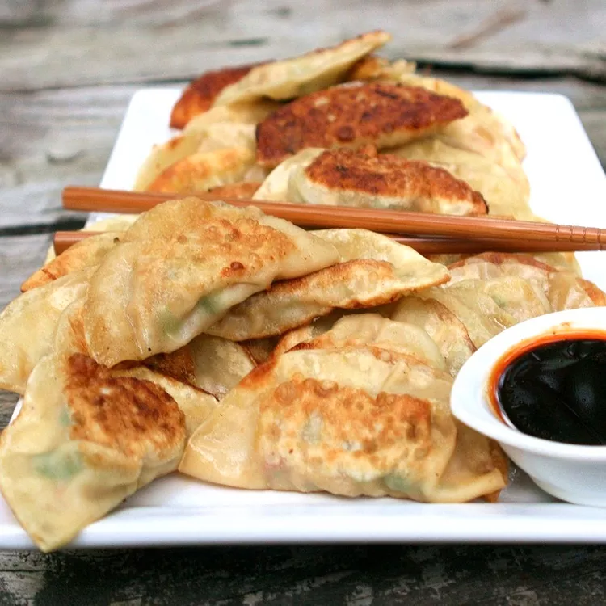

Dumplings

Ingredients
- 1 pound raw shrimp, peeled and deveined
- 4 pounds ground beef
- 1 tablespoon minced fresh ginger root
- 1 shallot, minced
- 1 bunch green onions, chopped
- 3 leaves napa cabbage, chopped
- 2 tablespoons soy sauce
- 1 teaspoon Asian (toasted) sesame oil
- salt and white pepper to taste
- 1 pinch white sugar
- 1 (10 ounce) package round gyoza/potsticker wrappers
- vegetable oil
- ¼ cup water
Method
- Place the shrimp in the work bowl of a food processor, and process until the shrimp are finely ground.
Set aside in a large bowl. Working in batches, process the ground beef to a fine grind, and set aside
with the shrimp. Combine the shrimp and ground beef with ginger, shallot, green onions, napa cabbage,
soy sauce, sesame oil, salt and pepper, and white sugar, and mix the ingredients until thoroughly combined.
- To fill the pot stickers, place a wrapper on a work surface in front of you, and place a scant teaspoon
of filling in the center. With a wet finger, dampen the edges of the wrapper. Fold the dough into a half-moon
shape, enclosing the filling, and press and seal to remove extra air and tightly seal the edges together.
It's nice to fold several small pleats in the top half of the wrapper for a traditional look before you
seal in the filling. Refrigerate the filled wrappers on a parchment-lined baking sheet while you finish
filling and sealing the pot stickers.
- Heat the oil in a large nonstick skillet with a lid over medium heat. Place pot stickers into the hot oil,
flat sides down, without crowding, and let fry until the bottoms are golden brown, 1 to 2 minutes.
Turn the dumplings over, and pour the water over them. Cover the pan with a lid and let the dumplings
steam until the water has nearly evaporated and the dumplings have begun to fry in oil again, 5 to 7 minutes.
Uncover the skillet, and let the pot stickers cook until all the water is evaporated and the wrapper
has shrunk down tightly onto the filling, another 2 to 3 minutes.